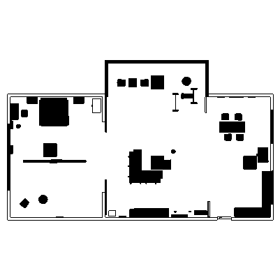

|  |
Robotics Studio 1 Sprints
This project, part of Sprint 3 of our robotics system development, focuses on detecting cylindrical objects in an indoor environment by comparing laser scan data against a pre-existing ground truth map. Using ROS 2, Gazebo, OpenCV, and TF2, the system identifies discrepancies between the laser scan and the map, indicating new obstacles like cylinders.
|